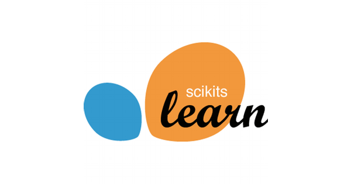
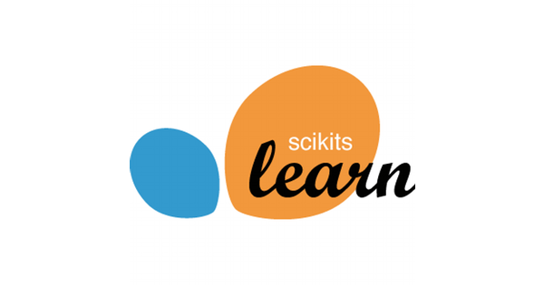

About Me
Over the past two years, I have gained professional experience as a Digital Quality Engineer where I specialized in automation testing and performance monitoring using Python, Selenium, and SQL.
With a passion for learning and a keen interest in AI, machine learning, and web development, I am continually honing my skills in collaborative environments. Also i have worked on projects utilizing data visualization tools like Tableau and Power BI, as well as advanced machine learning techniques
Education
University Life
Master of Science • expected-July 2025
Currently pursuing an MSc in Information Systems, focusing on advanced topics such as data management, systems analysis, and emerging technologies.
Bachelor of Engineering • July 2021
Graduated with a Bachelor of Engineering in Computer Engineering from Shah & Anchor Kutchhi Engineering College, achieving an average CGPA of 8.28.
Diploma Engineering • July 2018
Completed a three-year diploma course in Information Systems from Shah & Anchor Kutchhi Polytechnic, achieving an average percentage of 75.02%.
School Life
SSC• March 2015
Having achieved 77.20 percent on the State Board Examination and a passion for technology.
Work
Automation Tester at Quality Kiosk Pvt Ltd
Quality Engineer• October 2021 - December 2023
Developed and monitored automation scripts using Python and Selenium, ensuring optimal performance and availability of web/mobile applications through AppDynamics. Collaborated with clients to understand business needs, addressed backend issues using SQL and AppDynamics insights, and managed server processes with sanity checks. Maintained comprehensive project documentation for streamlined reference.
Data Analyst Internship at ShapeAI
Data Analyst Intern• July 2021 - October 2021
The Internship allowed me to not only gain insights from data but also to see the perspective of a Data Scientist who is in the field. My internship helped me build a firm foundation in the Data Science field! A lot of practical knowledge was available, as well as hands-on projects to grow my skills.
Uneako
Business Development Intern• June 2021 - August 2021
Collecting contact from LinkedIn by web scrapping technique using LeadLeaper extension to collaborate with them. Sending emails and personalized notes was the main task in collaborating to grow business. Social Media Marketing was also task forpromoting products.
Skills


 



Check Out Some of My Projects.

INSURANCE PREDICTION
Dataset: Insurance Charges(Dataset added with project files)
Important Libraries and Modules: Numpy, Pandas, Scikit_learn, Streamlit
Primary Goal: Implementing End to End project by predicting the charges of insurance based on provided information by user.
Approaches:
Loaded the data and using some basic commands and analyse the features.
By using replace function categorical values are replaced by 0,1, so on.
Performed 1-hot encoding and splitted the data as input in 'X' variable and output in 'y' variable.
Further used the algorithm Linear Regression for prediction with default parameters.
Result: Predicted the model ACCURACY of 75%.
Technologies: Python, Streamlit
EDA, Machine Learning
ROCK_PAPER_SCISSOR
Dataset: Images Dataset(Dataset added with project files)
Important Libraries and Modules: Numpy, Pandas, Tensorflow and Tensorflow Dataset
Primary Goal: Classifying the images(Rock, Paper, Scissor) with CNN using TENSORFLOW dataset.
Approaches:
LRather than taking input in form of dictionary i.e {inpuy: "input", label: "label"}, by using "as_supervised = True" now will have 2-tuple structure i.e. (input, label). Then created 16 batches for both training as well as testing.
Result: Predicted the model ACCURACY of 97.58%.
Technologies: Python, Tensorflow
Model Training, Deep Learning

OBJECT DETECTION
Dataset: Images of all Objects(Dataset added with project files in images folder)
Important Libraries and Modules: Numpy, Opencv_python, Six, Tensorflow, Streamlit, Pillow
Primary Goal: Identifying the objects within the label bounded box.
Approaches:
Installing of OpenCV -> pip install opencv-python
Configuration files -> configPath = 'ssd_mobilenet_v3_large_coco_2020_01_14.pbtxt' AND weightsPath = 'frozen_inference_graph.pb
Building Model
Calculating Confidence
Technologies: Python, OpenCV, Streamlit
Model Training, Image Annotation
SKIN CANCER
Dataset: Skin Cancer Images(Dataset took from Kaggle)
Important Libraries and Modules: Numpy, Pandas, Matplotlib ,Tensorflow, Streamlit
Primary Goal: Identifying the skin infected with skin cancer by the model by inputing the images.
Approaches:
Loaded the data and using some basic commands and defined the image values.
Labeling image in batches, setting channel value and then spliting it into train and test data.
Performed resizing & rescaling to start with creating layers to build model.
Ploting & predicting - the last step for model building.
Result: Needs fininshing with accurate results
Technologies: Python, Pandas, Tensorflow, Streamlit
Disease Detection, Deep Learning